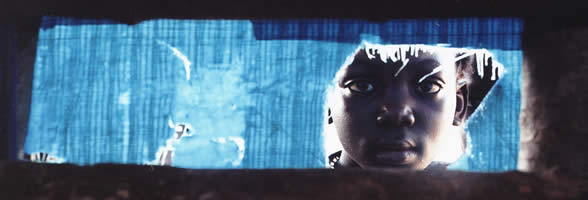
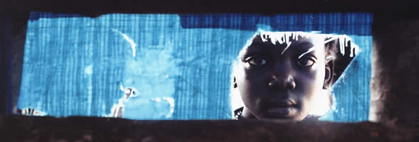
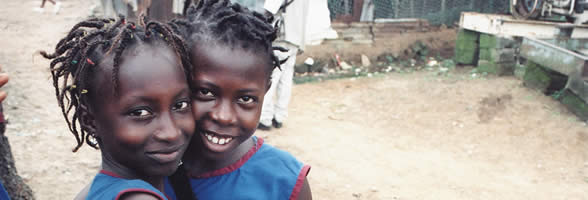
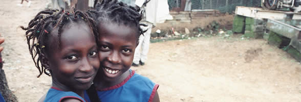

A Rudolf Steiner School
Contact UsFreetown, Sierra Leone
“Our highest endeavour must be to develop free human beings who are able of themselves to impart purpose and direction to their lives.”Rudolf Steiner
 


 

Get involved...
The History of Goderich Waldorf School
The Goderich Waldorf School was founded in 2001 by Shannoh Kandoh, a Sierra Leonean social worker. This was at the end of Sierra Leone’s ten-year civil war in which thousands of children became soldiers and rebel groups destroyed entire villages. Many of the villagers sought refuge from rebel attacks in the provinces by fleeing to the relative safety of the capital, Freetown, where government soldiers offered protection. By virtue of an army battalion in its neighborhood, Goderich Village became a haven for internal refugees from throughout Sierra Leone. Here Mende, Temne, Limba, Fullah, Soso, Sherbro, and Loko peoples built shanties next to peoples of all the other ethnic groups of the country and radically changed what had been a quiet sea-side community, long ago settled by the Krio people, descendents of freed slaves. After the war, most of the refugees remained, many of them orphaned children who slept wherever they could find a quiet spot and did menial tasks in the markets or entered into more lurid and dangerous trades including drug dealing and prostitution in order to earn their daily food.
With years of experience providing material and emotional support to street children during the war, Shannoh Kandoh came to Goderich after the rebels had turned in their guns to offer help to the hundreds of destitute children in the community. With no money and no organization to back him, he relied on a local volunteer to help him with the work. They built a tarpaulin hut on the beach where children could gather during the day for informal literacy lessons and retire to at night for a peaceful rest.
Over the ensuing six years, this small and very personal effort by one man developed under the efforts and commitment of a growing body of volunteers, the formalization of a board of directors, and the financial support of foreign donors. In the spring of 2008, one hundred ninety children were enrolled in the school’s six classes, and six teachers and three lunch cooks were employed.
Early on, Mr. Kandoh decided to develop a Waldorf school after having read that the pedagogical ideas expressed by Rudolf Steiner and carried out in Waldorf schools worldwide aimed at healing children harmed by the fast pace, violence and materialism of modern society. He secured a fellowship to train as a Waldorf teacher in England and completed that training in 2004. The German Waldorf organization, Freunde der Erziehungskunst Rudolf Steiners, has been supporting the school’s development into a formal Waldorf school and providing most of its operating budget from 7,000-11,500 Euros since 2003. Waldorf teachers visiting from England and the United States have provided material support and professional development for the largely untrained teachers.
With the memories of the war fading, refugees have become community members, but Sierra Leone’s weak economy and lack of basic social services mean that every one of the school’s students is at risk of malnutrition, exploitation in child labor, illiteracy and eventual unemployment as young adults. The faculty has worked to place all children in local families, but most of these families struggle to put together one meal a day and living conditions are poor, with no sanitation and filthy ditches running through large sections of the community. There are no quick and permanent fixes to these problems and the school remains entirely dependent upon foreign donations to keep going, which it intends to do well into the future.